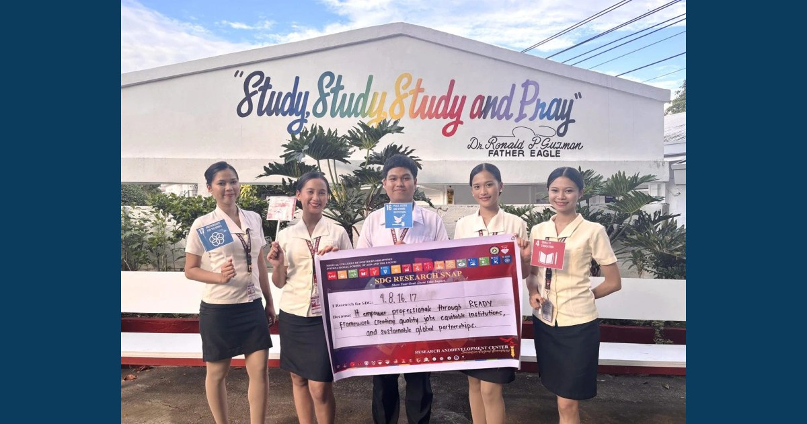

BS Tourism Management Students Connect Research Proposals with Global Goals

BS Tourism Management students successfully presented and defended their research proposals on September 22–23, 2026, demonstrating their developing competence in research, critical inquiry, and evidence-based problem-solving. As part of the activity, the student researchers participated in the SDG Research Snap, an initiative under SDG SPOT @ RDC: Research for the Goals.
Read full article